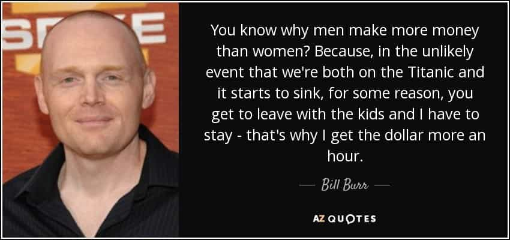

Thomas Hobbes is an Australian uni student hiding out in his mother's basement waiting for the singularity to arrive. As a backup plan he is secretly hoping to avoid the perils of an actual career by becoming a writer and travelling the world.


Having recently watched Passengers I have to agree with the reviews, its simply not the best movie. Passengers is a film that almost – almost deals with some very fundamental ideas about humans, sex and our relationships with each other. Unfortunately, these ideas are barely touched on, and I have a strong suspicion as to the reasons why.
The basic premise (spoilers) is that Jim (Chris Pratt) wakes up 90 years early on a 120 year space voyage to another planet due to an on-board malfunction. Everyone else remains in hibernation. Due to various circumstances (which make little sense, but we’ll go with it) he can’t go back to sleep or awaken a member of the crew to help him (being sealed off in a separate compartment behind a huge door).
He is surrounded by every luxury, but with no one to talk to (except various AIs with a Siri-like level of intelligence). He eventually works out the only thing he can really do is awaken any of the other passengers. He finally picks Aurora (Jennifer Lawrence) mostly because, lets face it, she’s hot and he wants to bone her. After a year and 3 weeks of this “Castaway” routine he finally wakes her up.
Initially, he doesn’t tell her, and she has to assume her pod malfunctioned as well. She comes to accept her essential death sentence and after a while the two of them have a bit of a space romance and become lovers. Mostly because they’re two very attractive people, I can believe this part.
Eventually, of course, Aurora figures it all out (the robot bartender lets it slip). Predictably, things turn cold instantly. There’s a few scenes of shouting, her avoiding him, him apologizing. She alternates between ignoring him and physically attacking him (again, quite believable). Later on a whole bunch of stupid stuff happens, culminating in the two of them having to single-handily fix the ship’s fusion reactor.
A heartwarming moment occurs at the end, when they finally figure out a way (not possible earlier) to put only one of them to sleep. Jim nobly offers it to Aurora, but she declines and we fast-forward to a final scene where the other crew and passengers wake up 88 years later and see a nice garden growing in the main lobby, implying the two of them lived their whole lives on the ship, got old and died there.
While I will give credit to the film design (the Avalon is a cool-looking starship) the film could have been infinitely more dramatic. The plot is dull. There are no real surprises and it has all the character depth of the Star Wars prequels.

This question is at the heart of the film. It is almost a spiritual sequel to Castaway. What if you were Tom Hanks on the island but you could actually wish for someone to join you there, though presumably for life and with no chance of escaping?
This concept has actually been explored in mythology before—there is the story of Hades (Greek god of the underworld) kidnapping Zeus’s daughter Persephone and forcing her to live with him in the underworld as his wife. Some reviews have referenced Stockholm Syndrome as well, but I think the dumbest ones are those which have the gall to say the film “encourages a sense of male entitlement.” How dare a man actually do what he wants!
As for Jim’s dilemma, if we’re going to write up a list of pros and cons there’s really just one major reason in favor – because it will benefit him and make him happy and less lonely. This is true of all selfish actions. Very simple.
I’d say there are three reasons against:
I think the film’s strength is that it effectively removes the first reason. It not only makes the choice for Jim very clear-cut in giving him the opportunity to do something nakedly selfish, but by removing the main argument against it – that of some sort of higher authority preventing him. He’s not just without company on the spaceship – he’s without laws. There’s no one there to deter or punish him. This leaves just the other two reasons.

Many people will say this is a reason in and of itself, but my response is, so what? Bad things happen to other people all the time. Several thousand Africans probably died of poverty and disease yesterday, yet today I didn’t see anyone in the street shedding any tears.
Here is where you have dumb feminists saying Jim has a “sense of male entitlement.” But what’s inherently wrong with ‘wanting’ something? Isn’t everything driven by wants? The whole global economy is based on people wanting things, up to an including intimacy with others.
No, there’s only one real reason left.
This is the real reason, and its something so simple yet I think society has forgotten it. We don’t care about others just for the sake of it – we care about them because of the way they make us feel.
I like chocolate because it tastes good. That’s really all there is to it. You can’t separate the way you care about something or someone from their function towards you. An emotional attachment has to be earned, not assumed.
This is a very simple concept and yet something that modern feminism and social justice seems to have thrown out the window. To care about others, to treat them as anything more than a random bunch of atoms, there must be a reason.
Not caring about something is the default setting. They have it completely the wrong way around. This is at the heart of the modern left’s faults, and Hollywood reflects this.
Quite simply – If I’m on a spaceship with Jessica Valenti, wearing her “I bathe in male tears” T-shirt and there’s only one escape pod left, why should I give it to her? Cry me a river about male entitlement then.

Yet these people expect kindness to be automatic. That I should automatically care about starving Africans or Muslim refugees or a battered housewife simply because these things are inherently sympathetic. They’ve taught people, especially young women, that they “don’t owe men a thing” and should proceed to act completely selfishly, then decide to criticize this movie about a man acting selfishly.
What the hell does Jim owe Aurora, or anyone else?
No – there is no objective sympathy, only subjective. If I know the Muslim refugee or battered housewife personally, we might be in business, but only then.
Tugging on heartstrings: lesson 1
This is the whole meaning behind the concept of ‘love’. Love is an emotional connection so intense that you would literally rather die than stop being with someone. Love is when you would give your life for another person (or even an animal or object). If you have a partner, but probably wouldn’t sacrifice yourself for her, you’re probably just in ‘lust’ not ‘love’. I also think this tells a lie to the whole ‘love at first sight’ thing. No, you’re just in ‘lust at first sight’ – far more common.
This is why modern, non-traditional relationships so often don’t work. A woman might still offer sex, but what else? Where is the emotional attachment between a modern couple that would compel one member to actually sacrifice themselves for the other? Why would I shove Jessica Valenti aside and take the escape pod, yet if it was a quality women – beautiful, empathetic, dutiful, one who’s actually worked to gain my love over an extended period of time, I would probably just nod and say, with no hesitation, ‘take it honey, you know I couldn’t live without you…’
The whole question as to whether you’d wake someone up or not, if you’re in Jim’s shoes, is how emotionally attached you feel to another person or other people. The film could have been a lot more interesting if it slowly stripped away Jim’s sense of morality (that which modern society has imposed upon him so that he’s a better slave) and exposed him, a typical average Joe, for the selfish creatures we humans really are.
Imagine that Jim wakes Aurora up. She later finds out and refuses to talk to him. At this point he decides “fuck it,” throws her out the airlock, and picks another women to be his Eve instead. This could repeat several times. It could have been a real “descent into darkness” thing. I’ll call this the red pill ending. In fact, the film would have been so much more interesting if it headed in the direction of Pandorum.
Pandorum – like Passengers but actually interesting
This is at the heart of why the movie is so awful and just plain dull – they simply can’t do this. Instead they have to give the blue pill “guy continues to act selflessly for absolutely no reason” ending.
In Jim’s situation – stripped of all human contact, all laws, and all responsibilities, the real answer is very likely that we will be stripped down to the very selfish creatures we all know we are deep down. This is why cannibalism is not uncommon in survival situations, as our desperate bodily needs overcome whatever shallow sense of morality our logical minds have previously seen fit to believe. Here its loneliness rather than food, but its the same principle.
Jim is an emotional cannibal, who, after thinking over the issues at length, I really can’t bring myself to criticize. We’re not machines, we’re not the emotionless robot barkeep. As social animals, we need intimacy like we need food. Society insists on ignoring this realty, like how they ignore the connection where around 75% of suicides are connected to a breakup. Does a women (or anyone for that matter) ‘murder’ a man by repeatedly ignoring him and mistreating him emotionally?
Yes, I think it is perfectly possible.
Hollywood however, simply cannot bring itself to embrace this conclusion. Instead it dances around it for two hours before events somehow work out and Jim and Aurora come to live happily ever after.
Passengers is a perfect example of political correctness ruining films. Any story that deeply explores human nature is probably going to have to conclude that we are fundamentally selfish creatures. Selfishness is at the root of morality. Its the first building block, the cornerstone around which everything else lies. Its not ‘how do you justify selfishness’ but ‘how do you justify not being selfish?
So of course Passengers sucked. On the big screen, people just aren’t allowed to be people anymore.
Read More: US Government Goes Full Retard And Backs War Draft For Women